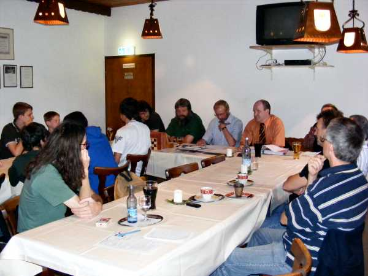
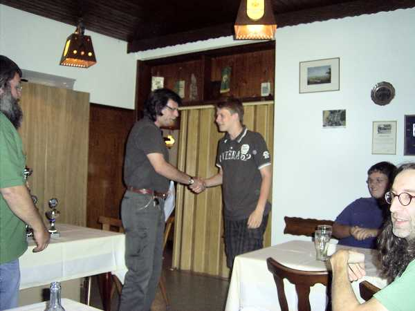
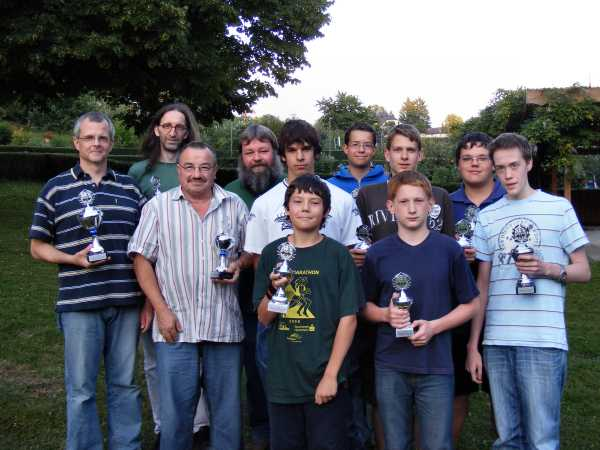

Gut besucht war die Jahreshauptversammlung auch durch die Anwesenheit vieler Jugendspieler.

Der Vorstand berichtete über die abgelaufene Saison.

Alle Jugendspieler erhielten für ihre Teilnahme an den Jugendvereinsmeisterschaften zumindest eine Medaille.

Rafael Sterzik wurde 3. der Gruppe 2 der Vereinsmeisterschaft
und 3. der Gruppe U17 der Jugendvereinsmeisterschaft.

Elmar Kohlhöfer (2. Platz Gruppe 2 der Vereinsmeisterschaft)

Neuer (und alter) Vereinsmeister 2008:
Dr. Thomas Schmidt

Zum Abschluss versammelten sich alle Pokal- und Medaillengewinner zu einem Gruppenfoto.